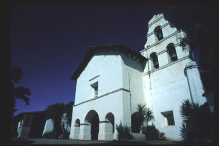
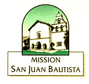

Welcome to Old Mission San Juan Bautista

Founded June 24, 1797
Old Mission Church (1797)
Second & Mariposa Street
P.O. Box 400
San Juan Bautista, CA 95045
Phone: (831) 623-2147 Fax: (831) 623-2433
Contact Information
Pastor: Rev. Edward Fitz-Henry
Official Website: http://www.oldmission-sjb.org/
Old Mission Museum & Gift Shop
Museum Hours: Mon-Saturday: 9:30am-5:OOpm; Sunday:10:OOam-5:OOpm
Gift Shop Manager: Jackie Ferrera
Phone: (831) 623-4528
Please remember the church,
buildings and grounds of San Juan Bautista are almost 200 years old! We
urge you to be careful as you explore its wonders. Be mindful of low doorways
and uneven surfaces. The mission is beautiful but it is not perfect. Only
GOD IS PERFECT. Thank you.
Text by Old Mission San Juan Bautista.
Photographs & Web Site Design by Ruben G. Mendoza,
1998.
All Rights Reserved.
